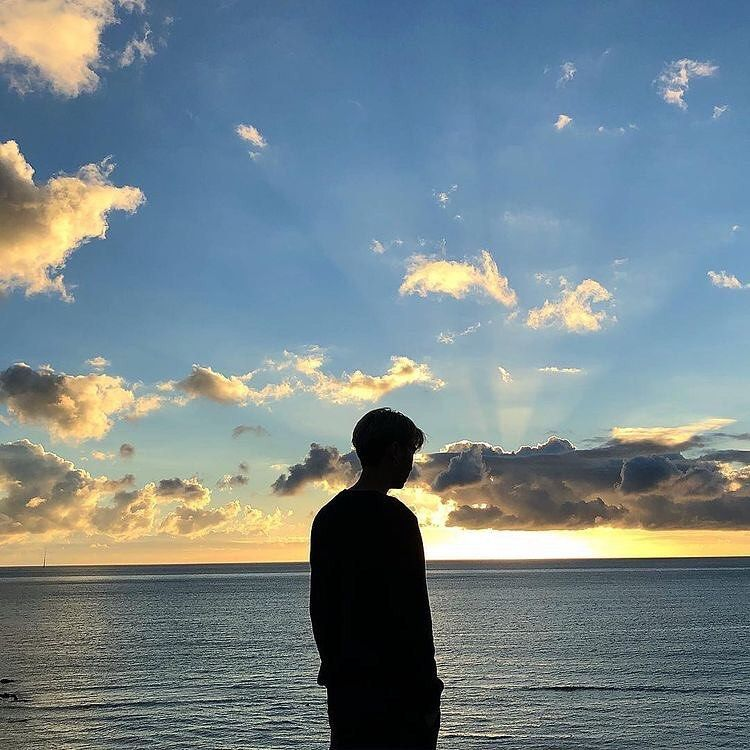
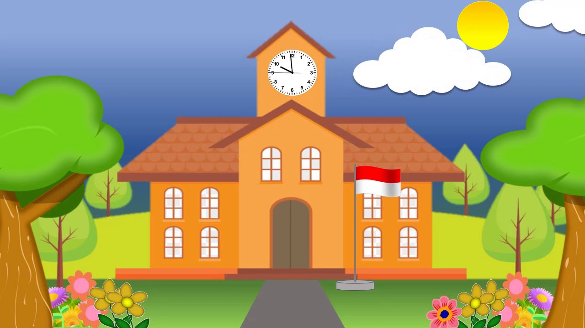

Personal

Luthfi maulana adalah individu yang sangat tertarik dengan hal yang menantang,baik itu di pelajaran ataupun diluar pelajaran, tetapi ia tidak ingin ribet. Sejak kecil, Luthfi sangat giat mengejar impiannya. Mengambil jurusan rekayasa perangkat lunak bukanlah impian sebenarnya,tetapi luthfi yakin ini adalah jalan yang terbaik untuk sukses.
Pendidikan
Pendidikan Formal
Pengalaman
SD PERSA

pengalaman saya selama di sd :
- pembawa doa setiap upacara hari besar dan upacara hari senin
- mengikuti kejuaraan tarung derajat tingkat junior
- mengikuti lomba adzan antar sekolah
- mengikuti lomba futsal antar sekolah
- mengikuti ekstrakurikuler paskibra
- mengikuti ekstrakurikuler pramuka
- mengikuti camping pramuka antar kecamatan se kota medan
MTSN 3 MEDAN
pengalaman saya selama di mts :
- pembawa doa setiap upacara biasa dan hari nasional
- mengikuti lomba adzan antar sekolah
- pembawa tilawah ketika acara keagamaan
- juara 1 perlombaan e-sport sekota medan
pengalaman diluar sekolah :
- mengikuti seleksi boxing di PERTINA SUMUT
- mengikuti kelas muay thai
- mengikuti seleksi silat antar ranting
SMKN 9 Medan

Menempuh pembelajaran dengan jurusan Rekayasa Perangkat Lunak
saat baru masuk SMK, saya masih bingung tentang codingan. Setelah sudah dipelajari satu persatu, saya mulai paham dan ternyata jurusan RPL ini sangat menantang.
Contact
Untuk Mengenal Lebih Lanjut dengan saya dapat dihubungi pada akun media sosial berikut ini :